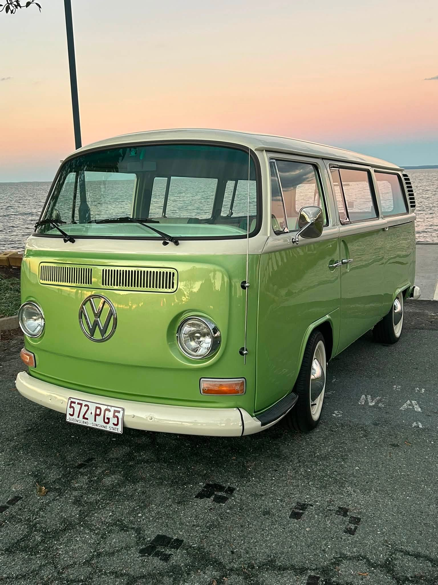

01
Meet Miss Olivia
A 1972 Bay Window. Sage over cream. Eight seats, chrome heart, whitewall tyres.
1972 Type 2 — Wellington Point
A 1972 Type 2. Green & cream. Arrive in timeless style.
The invitation
Eight seats. One entrance. Miss Olivia is a restored 1972 Kombi — booked for weddings, formals, races, and coastal days across the Redlands.
The occasions